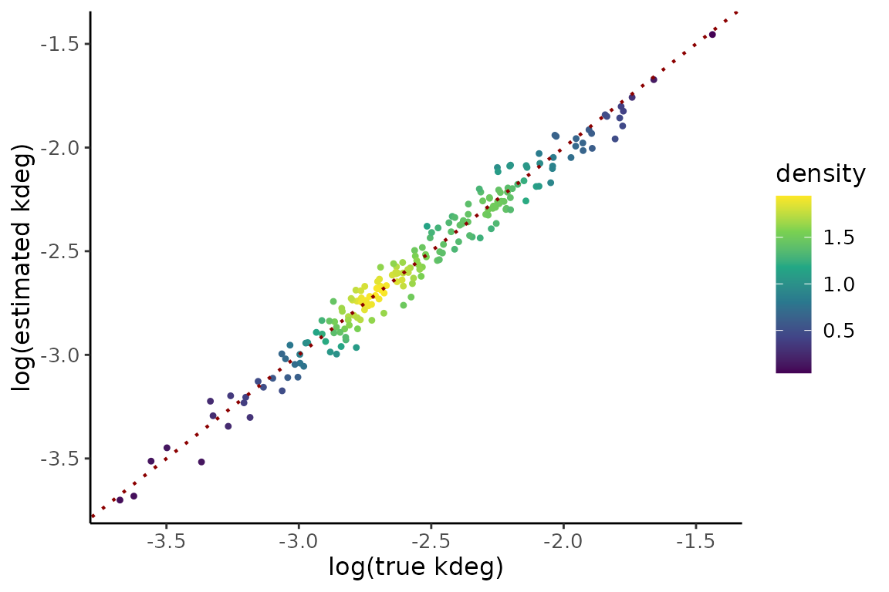
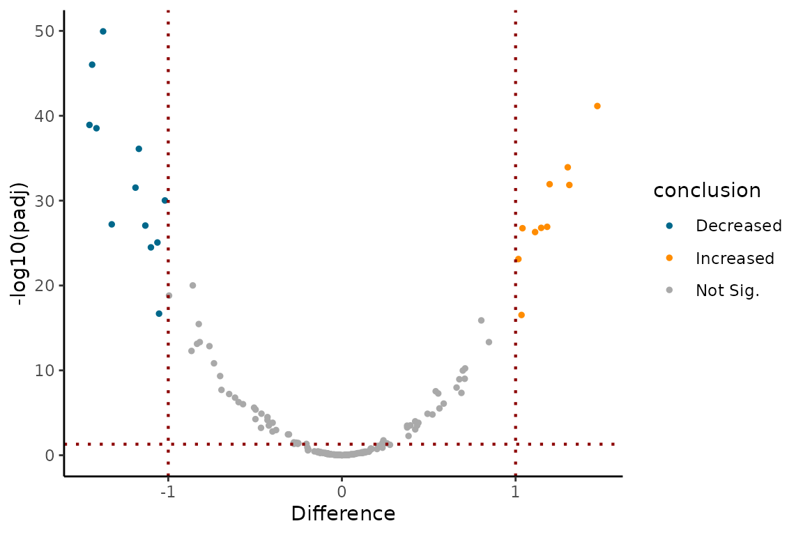

library(EZbakR)
library(dplyr)
#>
#> Attaching package: 'dplyr'
#> The following objects are masked from 'package:stats':
#>
#> filter, lag
#> The following objects are masked from 'package:base':
#>
#> intersect, setdiff, setequal, union
library(ggplot2)
library(MASS) # For plotting
#>
#> Attaching package: 'MASS'
#> The following object is masked from 'package:dplyr':
#>
#> select
# For coloring points by density:
# Source: https://slowkow.com/notes/ggplot2-color-by-density/
get_density <- function(x, y, ...) {
dens <- kde2d(x, y, ...)
ix <- findInterval(x, dens$x)
iy <- findInterval(y, dens$y)
ii <- cbind(ix, iy)
return(dens$z[ii])
}Introduction
Increasingly, subcellular fractionation is being combined with
NR-seq, allowing researchers to probe the kinetics of flow between
subcellular compartments. EZbakR’s EZDynamics() function
supports the analysis of this kind of data through generalized dynamical
systems modeling. In addition, EZDyamics(), when combined
with fastq2EZbakR’s flexible feature assignment strategy, opens the door
for analyses of both premature and mature RNA dynamics. It is even
possible to combine these two. In this vignette, we will learn how to
run EZDynamics().
Quickstart
Here we will quickly cover a couple use cases to efficiently showcase
the full extent of EZDynamics() functionality. In the
sections that follow, a more detailed description of everything shown
here will be provided.
Modeling cytoplasmic to nuclear flow
Data: Whole cell, cytoplasmic fraction, and nuclear fraction NR-seq data.
Goal: Fit the simple model 0 -> N -> C -> 0; nuclear RNA (N) is synthesized, exported to the cytoplasm (C), and degraded (0).
Pre-requisites:
- Create EZbakRData object
- Run EstimateFractions
- Create table of feature lengths from annotation
- Run AverageAndRegularize to average fractions across replicates
### SIMULATE DATA
simdata <- EZSimulate(nfeatures = 200,
ntreatments = 1,
mode = "dynamics",
label_time = c(1, 3),
dynamics_preset = "nuc2cyto")
### EZBAKR ANALYSES
ezbdo <- EZbakRData(simdata$cB, simdata$metadf)
ezbdo <- EstimateFractions(ezbdo)
#> Estimating mutation rates
#> Summarizing data for feature(s) of interest
#> Averaging out the nucleotide counts for improved efficiency
#> Estimating fractions
#> Processing output
# Lengths of features:
# In simulation, all features are same length, so this is here for illustrative
# purposes only
feature_lengths <- tibble(
GF = unique(simdata$cB$GF),
length = 1000
)
# Averaging fractions rather than kinetics
# Note the model, which specifies that we want to average data for a given
# compartment AND label time (tl).
ezbdo <- AverageAndRegularize(ezbdo,
formula_mean = ~tl:compartment - 1,
type = "fractions",
feature_lengths = feature_lengths,
parameter = "logit_fraction_highTC")
#> Fitting linear model
#> Estimating coverage vs. variance trend
#> Regularizing variance estimatesInput to EZDynamics():
- EZbakRData object on which you have run AverageAndRegularize
- A matrix, referred to as a “graph”, describing the species you are modeling and their relationships to one another:
### Input #2: the graph
graph <- matrix(c(0, 1, 0,
0, 0, 2,
3, 0, 0),
nrow = 3,
ncol = 3,
byrow = TRUE)
colnames(graph) <- c("0", "N", "C")
rownames(graph) <- colnames(graph)
# Each row and column represents an RNA species being modeled
# Here we are modeling the dynamics of nuclear (N) and cytoplasmic (C)
# RNA. "0" represents no RNA, and must appear in the graph. N is synthesized
# from 0 (i.e., its synthesis kinetics are 0-th order), and C is degraded to 0
#
# Numbers in graph should range from 0 to the number of parameters in your model.
# Order is arbitrary- A list of equations describing how the RNA you actually measured is related to the species you are modeling:
modeled_to_measured <- list(
nuclear = list(GF ~ N),
cytoplasm = list(GF ~ C),
total = list(GF ~ C + N) # total RNA is a combination of C and N
)Running EZDynamics:
# See documentation (?EZDynamics()) for descriptions of all parameters
# specified. Bit of trickery here with an object loaded with EZbakR
# called ode_models. More on this later
ezbdo <- EZDynamics(ezbdo,
graph = graph,
sub_features = "GF",
grouping_features = "GF",
sample_feature = "compartment",
modeled_to_measured = ode_models$nuc2cyto$formulas)Assessing accuracy since this is simulated data with known ground truth:
gt <- simdata$ground_truth$parameter_truth
dynfit <- ezbdo$dynamics$dynamics1
compare <- dplyr::inner_join(dynfit, gt %>% dplyr::rename(GF = feature),
by = "GF")
true_scale_factor <- mean(exp(compare$logk1[compare$logk1 < 9.9]) / compare$true_k1[compare$logk1 < 9.9])
gPk1 <- compare %>%
dplyr::mutate(density = get_density(
x = log(true_k1),
y = log(exp(logk1)/true_scale_factor),
n = 200
)) %>%
ggplot(aes(x = log(true_k1),
y = log(exp(logk1)/true_scale_factor),
color = density)) +
geom_point(size=0.9) +
theme_classic() +
scale_color_viridis_c() +
xlab("log(true ksyn)") +
ylab("log(estimated ksyn)") +
geom_abline(slope =1,
intercept = 0,
color = 'darkred',
linewidth = 0.75,
linetype = 'dotted') +
theme(axis.text=element_text(size=10),
axis.title=element_text(size=12),
legend.text=element_text(size=10),
legend.title=element_text(size=12))
gPk2 <- compare %>%
dplyr::mutate(density = get_density(
x = log(true_k2),
y = logk2,
n = 200
)) %>%
ggplot(aes(x = log(true_k2),
y = logk2,
color = density)) +
geom_point(size=0.9) +
theme_classic() +
scale_color_viridis_c() +
xlab("log(true kexp)") +
ylab("log(estimated kexp)") +
geom_abline(slope =1,
intercept = 0,
color = 'darkred',
linewidth = 0.75,
linetype = 'dotted') +
theme(axis.text=element_text(size=10),
axis.title=element_text(size=12),
legend.text=element_text(size=10),
legend.title=element_text(size=12))
gPk3 <- compare %>%
dplyr::mutate(density = get_density(
x = log(true_k3),
y = logk3,
n = 200
)) %>%
ggplot(aes(x = log(true_k3),
y = logk3,
color = density)) +
geom_point(size=0.9) +
theme_classic() +
scale_color_viridis_c() +
xlab("log(true kdeg)") +
ylab("log(estimated kdeg)") +
geom_abline(slope =1,
intercept = 0,
color = 'darkred',
linewidth = 0.75,
linetype = 'dotted') +
theme(axis.text=element_text(size=10),
axis.title=element_text(size=12),
legend.text=element_text(size=10),
legend.title=element_text(size=12))
gPk1
gPk2
gPk3
Modeling nuclear degradation
Above, we fit a model where nuclear RNA cannot degrade. What if we no longer want to make that assumption? Just change the graph to specify that N can degrade to 0:
### Input #2: the graph
graph <- matrix(c(0, 1, 0,
3, 0, 2,
4, 0, 0),
nrow = 3,
ncol = 3,
byrow = TRUE)
colnames(graph) <- c("0", "N", "C")
rownames(graph) <- colnames(graph)
# Each row and column represents an RNA species being modeled
# Here we are modeling the dynamics of nuclear (N) and cytoplasmic (C)
# RNA. "0" represents no RNA, and must appear in the graph. N is synthesized
# from 0 (i.e., its synthesis kinetics are 0-th order), and C is degraded to 0
#
# Numbers in graph should range from 0 to the number of parameters in your model.
# Order is arbitraryAnalyzing the data with this model is the same as before:
##### SIMULATE DATA
simdata <- EZSimulate(nfeatures = 50,
ntreatments = 1,
mode = "dynamics",
label_time = c(1, 3),
dynamics_preset = "nuc2cytowithNdeg")
##### EZBAKR ANALYSES
ezbdo <- EZbakRData(simdata$cB, simdata$metadf)
ezbdo <- EstimateFractions(ezbdo)
#> Estimating mutation rates
#> Summarizing data for feature(s) of interest
#> Averaging out the nucleotide counts for improved efficiency
#> Estimating fractions
#> Processing output
# Lengths of features:
# In simulation, all features are same length, so this is here for illustrative
# purposes only
feature_lengths <- tibble(
GF = unique(simdata$cB$GF),
length = 1000
)
# Averaging fractions rather than kinetics
# Note the model, which specifies that we want to average data for a given
# compartment AND label time (tl).
ezbdo <- AverageAndRegularize(ezbdo,
formula_mean = ~tl:compartment - 1,
type = "fractions",
feature_lengths = feature_lengths,
parameter = "logit_fraction_highTC")
#> Fitting linear model
#> Estimating coverage vs. variance trend
#> Regularizing variance estimates
# Fit ODE model
# Getting some help from ode_models object again
ezbdo <- EZDynamics(ezbdo,
graph = graph,
sub_features = "GF",
grouping_features = "GF",
sample_feature = "compartment",
modeled_to_measured = ode_models$nuc2cytowithNdeg$formulas)Modeling pre- and mature RNA dynamics
Data: Total RNA NR-seq data
Goal: Fit the simple model 0 -> P -> M -> 0; pre-RNA (P) is synthesized, gets preprocessed into mature RNA (M), which is eventually degraded.
In this case, your cB file will need at least two feature columns. In this example we will actually have 3, one called GF, which represents purely intronic data, one called XF, which represents purely exonic data, and one called feature, which is just a convenient union of XF and GF (i.e., it will have the value of XF or GF that isn’t “__no_feature”, meaning not assignable to that particular group). Here, we will assume that XF reads correspond solely to mature RNA, and that GF reads correspond solely to premature RNA. All of these choices can be altered though.
The graph in this case looks just like the nuclear to cytoplasmic model without nuclear degradation. In fact, it’s identical but with the column and row names changed for clarity:
graph <- matrix(c(0, 1, 0,
0, 0, 2,
3, 0, 0),
nrow = 3,
ncol = 3,
byrow = TRUE)
colnames(graph) <- c("0", "P", "M")
rownames(graph) <- colnames(graph)A couple things change this time when running the model:
##### SIMULATE DATA
simdata <- EZSimulate(nfeatures = 50,
ntreatments = 1,
mode = "dynamics",
label_time = c(1, 3),
dynamics_preset = "preRNA")
##### EZBAKR ANALYSES
ezbdo <- EZbakRData(simdata$cB, simdata$metadf)
ezbdo <- EstimateFractions(ezbdo)
#> Estimating mutation rates
#> Summarizing data for feature(s) of interest
#> Averaging out the nucleotide counts for improved efficiency
#> Estimating fractions
#> Processing output
# Lengths of features:
# In simulation, all features are same length, so this is here for illustrative
# purposes only
features <- unique(simdata$cB$feature)
feature_lengths <- tibble(
GF = c(features,
rep("__no_feature", times = length(features))),
XF = c(rep("__no_feature", times = length(features)),
features),
length = 1000
)
# Averaging fractions rather than kinetics
# Note the model, which specifies that we want to average data for a given
# compartment AND label time (tl).
ezbdo <- AverageAndRegularize(ezbdo,
formula_mean = ~tl - 1,
type = "fractions",
feature_lengths = feature_lengths,
parameter = "logit_fraction_highTC")
#> Fitting linear model
#> Estimating coverage vs. variance trend
#> Regularizing variance estimates
# Fit ODE model
# Getting some help from ode_models object again
ezbdo <- EZDynamics(ezbdo,
graph = graph,
sub_features = c("GF", "XF"),
grouping_features = "feature",
modeled_to_measured = ode_models$preRNA$formulas$total)The main differences to note are:
- The feature length table now has to include the set of features that uniquely define all distinct features. In this case that means at least GF and XF.
- Our formula_mean only includes the label time.
- There are two sub_features, GF and XF.
- The feature column is the grouping_feature.
- There is no sample_feature in EZDynamics. This is because all modeled species (premature and mature RNA) are assayed in all samples.
Cytoplasmic to nuclear flow of pre- and mature RNA
We can mix and match the two types of data we have discussed thus far, namely nuclear + cytoplasmic fractionation and total RNA data. This allows us to model the nuclear and cytoplasmic dynamics of both premature and mature RNA. For example, consider a model where nuclear premature RNA (NP) is first synthesized, and then either processed to mature nuclear RNA (NM), or exported to the cytoplasm (CP). NM can then be exported to mature cytoplasmic RNA (CM), and CP can be processed to CM. The graph in this case looks like:
graph <- matrix(c(0, 1, 0, 0, 0,
0, 0, 2, 3, 0,
0, 0, 0, 0, 4,
0, 0, 0, 0, 5,
6, 0, 0, 0, 0),
nrow = 5,
ncol = 5,
byrow = TRUE)
colnames(graph) <- c("0", "NP", "NM", "CP","CM")
rownames(graph) <- colnames(graph)Fitting this model looks like a combination of the nuc2cyto and preRNA models:
##### SIMULATE DATA
simdata <- EZSimulate(nfeatures = 50,
ntreatments = 1,
mode = "dynamics",
label_time = c(1, 3),
dynamics_preset = "nuc2cytowithpreRNA")
##### EZBAKR ANALYSES
ezbdo <- EZbakRData(simdata$cB, simdata$metadf)
ezbdo <- EstimateFractions(ezbdo)
#> Estimating mutation rates
#> Summarizing data for feature(s) of interest
#> Averaging out the nucleotide counts for improved efficiency
#> Estimating fractions
#> Processing output
# Lengths of features:
# In simulation, all features are same length, so this is here for illustrative
# purposes only
features <- unique(simdata$cB$feature)
feature_lengths <- tibble(
GF = c(features,
rep("__no_feature", times = length(features))),
XF = c(rep("__no_feature", times = length(features)),
features),
length = 1000
)
# Averaging fractions rather than kinetics
# Note the model, which specifies that we want to average data for a given
# compartment AND label time (tl).
ezbdo <- AverageAndRegularize(ezbdo,
formula_mean = ~tl:compartment - 1,
type = "fractions",
feature_lengths = feature_lengths,
parameter = "logit_fraction_highTC")
#> Fitting linear model
#> Estimating coverage vs. variance trend
#> Regularizing variance estimates
# Fit ODE model
# Getting some help from ode_models object again
ezbdo <- EZDynamics(ezbdo,
graph = graph,
sub_features = c("GF", "XF"),
grouping_features = "feature",
sample_feature = "compartment",
modeled_to_measured = ode_models$nuc2cytowithpreRNA$formulas)Performing comparative analyses
All of the above examples involved estimating kinetic parameters in a single biological condition. What if you have multiple distinct conditions and want to compare parameter estimates across these conditions? EZbakR can do that too! Here’s an example of how:
### SIMULATE DATA
# Now we are simulating two distinct biological conditions.
# Default is for about 50% of all features to have differences in
# all parameters.
simdata <- EZSimulate(nfeatures = 200,
ntreatments = 2,
mode = "dynamics",
label_time = c(1, 3),
dynamics_preset = "nuc2cyto")
### EZBAKR ANALYSES
ezbdo <- EZbakRData(simdata$cB, simdata$metadf)
ezbdo <- EstimateFractions(ezbdo)
#> Estimating mutation rates
#> Summarizing data for feature(s) of interest
#> Averaging out the nucleotide counts for improved efficiency
#> Estimating fractions
#> Processing output
# Lengths of features:
# In simulation, all features are same length, so this is here for illustrative
# purposes only
feature_lengths <- tibble(
GF = unique(simdata$cB$GF),
length = 1000
)
# DIFFERENT FROM SINGLE CONDITION ANALYSIS: "treatment" is included in the formula.
ezbdo <- AverageAndRegularize(ezbdo,
formula_mean = ~tl:compartment:treatment - 1,
type = "fractions",
feature_lengths = feature_lengths,
parameter = "logit_fraction_highTC")
#> Fitting linear model
#> Estimating coverage vs. variance trend
#> Regularizing variance estimates
# Nothing changes here!
ezbdo <- EZDynamics(ezbdo,
graph = ode_models$nuc2cyto$graph,
sub_features = "GF",
grouping_features = "GF",
sample_feature = "compartment",
modeled_to_measured = ode_models$nuc2cyto$formulas)
# Now we can run CompareParameters. Need to:
# 1) Let it know you want to use EZDynamics output (type = "dynamics")
# 2) Specify the "design_factor" (treatment in this case)
# 3) Specify the "parameter" you want to compare
# (let's compare log(k2), a.k.a logk2).
ezbdo <- CompareParameters(ezbdo,
type = "dynamics",
parameter = "logk2",
design_factor = "treatment",
reference = "treatment1",
experimental = "treatment2")
# Can make a volcano plot
# Here I have specified everything to be exhaustive, but
# in this case we could just specify `parameter = "logk2"`,
# since we only have one logk2 comparative analysis in our
# EZbakRData object
EZVolcanoPlot(ezbdo,
parameter = "logk2",
design_factor = "treatment",
reference = "treatment1",
experimental = "treatment2")
Taking a deeper dive
In this section we will explore in greater detail the many components
that make EZDynamics tick. We will discuss their structure
and the information they convey.
Running EZDynamics
EZDynamics has the following important/required
parameters:
- An
EZbakRDataobject on which you have runAverageAndRegularize(). - A matrix, referred to as the “graph” (like the mathematical concept, not the things you make with ggplot), specifying your RNA dynamical systems model.
- A list of formulas describing how each measured feature relates to the features you model in your “graph”.
- The feature columns mentioned in your list of formulas
(
sub_features). - The feature columns that will define the overarching features for
which you estimate kinetic parameters
(
grouping_features). - The column in your metadf that distinguishes different samples
assying different species of RNA. (
sample_feature).
To read more about each of these, check out the function documentation with ?EZDynamics. The “graph” and list of formulas will be described more below.
The graph
This is what tells EZDynamics the model you would like
to fit. It should be a matrix with as many rows as it has columns. Each
row/column represents a given specie of RNA. One of these rows/columns
must always be “0”, which will denote “no RNA”. RNA can be synthesized
from “no RNA”, and it can be degraded to “no RNA”. The other
rows/columns will be more tangible RNA species, like premature RNA, or
cytoplasmic RNA. Their names can be whatever you want, but for your
sake, try to make them make sense.
Element i,j (ith row, jth column) of this matrix specifies whether or not species i can be converted into species j. If so, this element should be an integer index from 1 to the number of possible conversions (i.e., the number of parameters in your model). Which integer is arbitrary, but I typically like filling out the matrix row by row (top to bottom), from left to right.
For example, if we wanted to model the nuclear export of synthesized RNA (N), and the eventual degradation of cytoplasmic RNA (C), we could define the following “graph”:
graph <- matrix(
c(0, 1, 0,
0, 0, 2,
3, 0, 0),
ncol = 3,
nrow = 3,
byrow = TRUE
)
colnames(graph) <- c("0", "N", "C")
rownames(graph) <- colnames(graph)The first row/column corresponds to “no RNA”, the second row/column corresponds to “nuclear RNA”, and the third row/column corresponds to “cytoplasmic RNA”. Thus:
Row 1, column 1 = 0 -> 0, which is a trivial non-transformation, and thus receives a value of 0. NOTE: the diagonal of this matrix should always be 0, for this same reason.
Row 1, column 2 = 0 -> N, which represents zeroth-order synthesis of nuclear RNA, a process which we are assuming occurs. Thus, it gets a non-zero integer index. We have chosen 1 in this case
Row 1, column 3 = 0 -> C, which would represent zeroth-order synthesis of cytoplasmic RNA, a process we assume never occurs. Cytoplasmic RNA in our model only comes from nuclear RNA. Thus, it gets a 0
Row 2, column 1 = N -> 0, which represents first-order degradation of nuclear RNA, which in this case we assume does not happen. It gets a 0.
Row 2, column 2 = N -> N, trivially 0
Row 2, column 3 = N -> C, which represents first-order conversion of nuclear RNA to cytoplasmic RNA, better known as nuclear export. We assume this does occur, and so it gets an integer index, which we have chosen to be 2.
Row 3, column 1 = C -> 0, which represents first-order degradation of cytoplasmic RNA, which we assume occurs. This thus gets an integer index, which we have chosen to be 3.
Row 3, column 2 = C -> N, which would represent re-entry of cytoplasmic RNA into the nucleus, which we are assuming doesn’t happen, and thus gets a value of 0.
Row 3, column 3 = C -> C, trivially 0
Our model has three parameters, the rate of synthesis of nuclear RNA, the rate constant for nuclear export, and the rate constant for cytoplasmic RNA degradation. Thus, our graph matrix needs to have a 1, 2, and 3 somewhere in it (integer indexes for each of these processes), which it does.
Identifiability
Left to your own devices, I am sure you could dream up some fantastical and mind-bending models of RNA dynamics. Most of these models will not be “fittable”. That is to say, you likely don’t have the data necessary to estimate reasonable values for all of the parameters in some of these intricate models. When this is the case, we say that the model is not “identifiable”. Roughly speaking, a model in this case will be identifiable if the number of parameters <= 2 * (the number of assayed RNA species). For example, in the case of our nuclear/cytoplasmic model discussed above, there are 3 parameters. Typically, if you are trying to fit such a model, you have nuclear fraction NR-seq data, cytoplasmic fraction NR-seq data, and whole cell NR-seq data. In the nuclear fraction you assay one specie of RNA (nuclear RNA, denoted N in the graph constructed above). In the cytoplasmic fraction you assay one specie of RNA (cytoplasmic RNA, denoted C in the graph above). From these two alone, you have 2 species, which means you can in theory estimate up to 4 parameters. Can you theoretically fit a more complicated model with whole cell data? Well your whole cell data assays the combination of two species, nuclear (N) and cytoplasmic (C) RNA. But these were both already assayed in other samples, thus the whole cell data doesn’t provide anything in terms of additional model complexity freedom.
That is not to say that the whole cell data in this case isn’t important. In fact, it is key to normalizing this data (see more on that below). Without it, you would not be able to use the read counts from each fraction to help infer kinetic parameters. In that case, the number of parameters you could estimate would only be equal to the number of assayed RNA species, rather than double this amount. The factor of 1 vs. 2 comes from the fact that you get two pieces of information about each RNA specie: the fraction that is labeled, and the number of reads. If you can’t normalize your read counts though, you effectively only get one piece of information per specie.
The limit on the number of estimatable parameters quoted above is a simple limit on the theoretical limit. It’s kind of like a best case scenario on the number of parameters you could hope to estimate. In practice though, not all parameters are practically identifiable. That is to say, if you had perfect, noise-less data you could determine their values, but with real data, they become difficult to pin down accurately. This is often a dynamic range problem, where a large range of values for a particular parameter in your model is not expected to have much of an impact on the data you observe. EZbakR can help you identify when this is the case; see more in the section on uncertainty quantification below.
The formulas
In addition to your model, you also need to specify to
EZDynamics() how the things you measured relate to the RNA
species you are modeling. For example, you might have a single feature
column from your cB that you analyze (e.g., XF, which in the
fastq2EZbakR output represents data for reads from definitively exonic
regions). The actual specie of RNA in your graph that this feature
represents though will differ from sample to sample though, if you are
for example analyzing subcellular fractionation NR-seq data. In
addition, there are times where you are analyzing multiple cB feature
columns (e.g., GF and XF, representing all reads from a gene, and exonic
reads from a gene, respectively). In this case, each feature will likely
represent a different RNA species, or combination of RNA species.
In all of these cases, formula objects are used to convey to
EZDynamics() what is what. A list of formula objects will
get passed to EZDynamics() via its
modeled_to_measured parameter. Each element of the list
needs to be a formula describing how the features in your cB,
potentially for a given set of samples, relates to the species in your
graph.
Example 1: nuclear and cytoplasmic fractionation
Consider the case of modeling nuclear, cytoplasmic, and total NR-seq
data. Assume in your metadf you have a column called
compartment, which specifies which samples represent which
of these three fractions. For example, your metadf might
look like:
metadf <- tibble(
sample = c("cyto_1", "cyto_2",
"nuc_1", "nuc_2",
"tot_1", "tot_3"),
tl = 1,
compartment = c("cytoplasmic", "cytoplasmic",
"nuclear", "nuclear",
"total", "total")
)Let’s also assume that your cB file has a single feature column,
let’s call it XF. The list you pass to modeled_to_measured
must have one element for each value of compartment that
shows up in your metadf. Each element needs to describe how XF in that
sample is related to the species in your graph. Say you referred to two
species in your graph, nuclear RNA (N in the graph) and cytoplasmic RNA
(C in the graph). modeled_to_measured would then be:
This says that:
- In the total RNA samples, XF represents the sum of cytoplasmic (C) and nuclear (N) RNA.
- In the nuclear RNA samples, XF represents nuclear RNA (N).
- In the cytoplasmic RNA samples, XF represents cytoplasmic RNA (C).
Example 2: pre-RNA dynamics
Now, consider the case of modeling premature and mature RNA dynamics
in total NR-seq data. In this case, each sample assays the exact same
RNA species. Therefore, we won’t need to specify separate formulae for
each sample. The difference though is that your cB file will need to
have more than one feature column. For example, fastq2EZbakR can output
cB files with both XF and GF columns. XF represents data for reads
mapping to exclusively exonic regions. GF represents data for all reads
(intronic and exonic) from a gene. In this case, we will need to provide
a list with one element per feature. Here is what a reasonable
modeled_to_measured list might look like in this case:
mtom <- list(
XF ~ M,
GF ~ P
)I am assuming that M represents mature RNAs in our graph, and P
represents premature RNA. To interpret this set of formulas, we need to
note one more thing: GF will be called both a
grouping_feature and a sub_feature in our call
to EZDynamics(). As a refresher,
grouping_features are those which never have a value of
“__no_feature”, or some similar null-assignment value. They will be
included in the final output. sub_features are what you
describe in modeled_to_measured; they represent specific
RNA species, or combinations of RNA species.
In our example, because GF is both a grouping feature and a sub
feature, the GF in our modeled_to_measured actually
represents all entries of our cB where XF is “__no_feature” (or
similar). That is to say, it represents the case where reads overlap
intronic portions of the gene. That is why, or formulas say that:
- XF represents the mature RNA
- GF represents the premature RNA
NOTE: There is a bit of complexity here, as while its true that intronic reads are definitively premature RNA, exonic reads are not necessarily definitely mature RNA. It would be more accurate to split XF into two features, call it XF_sj and XF_nosj (sj = splice junction). The former would be instances of splice junction mapping reads, which are (almost) definitively mature RNA, while the latter would represent reads that don’t overlap splice junctions, and could thus come from either premature or mature RNA. The formula in this case would look like:
mtom <- list(
XF_sj ~ M,
XF_nosj ~ P + M,
GF ~ P
)As an aside, fastq2EZbakR includes an sj column in its output cB,
which has a value of TRUE for data from reads overlapping
exon-exon splice junctions, allowing you to create this XF split
yourself.
Example 3: preRNA/mature RNA nuclear/cytoplasmic dynamics
What if you want to model the premature and mature RNA dynamics of nuclear and cytoplasmic RNA? In that case, you will need to have a list of lists, with one inner-list per compartment (e.g., total, nuclear, and cytoplasmic) with each inner-list describing how the multiple cB feature columns are related to the modeled species. Let’s say you are fitting the following model (in “graph” form):
graph <- matrix(c(0, 1, 0, 0, 0,
0, 0, 2, 3, 0,
0, 0, 0, 0, 4,
0, 0, 0, 0, 5,
6, 0, 0, 0, 0),
nrow = 5,
ncol = 5,
byrow = TRUE)
colnames(graph) <- c("0", "NP", "NM", "CP","CM")
rownames(graph) <- colnames(graph)NP = nuclear pre-RNA; NM = nuclear mature RNA; CP = cytoplasmic
pre-RNA; and CM = cytoplasmic mature RNA. If your metadf looks like what
it did in Example 1 of this section, then
modeled_to_measured might look like:
mtom <- list(
total = list(
GF ~ NP + CP,
XF ~ NM + CM
),
nuclear = list(
GF ~ NP,
XF ~ NM
),
cytoplasmic = list(
GF ~ CP,
XF ~ CM
)
)This is just a combination of the Example 1 and Example 2 lists, with the Example 2 lists effectively inside of the Example 1 lists.
The ode_models object
For your convenience, EZbakR provides a list of popular graphs and
formulas in a lazily loaded list called ode_models. If you
have EZbakR loaded, you can inspect the contents of this list. You can
read about its contents by running ?ode_models in your R
session (this will pull up the data’s documentation). I’ll save you the
suspense and tell you that it has 6 elements:
- nuc2cyto: Simplest model of nuclear and cytoplasmic RNA dynamics: 0 -> N -> C -> 0
- preRNA: Simplest model of pre-RNA and mature RNA dynamics: 0 -> P -> M -> 0
- preRNAwithPdeg: Same as preRNA, but now pre-RNA can also degrade.
- nuc2cytowithNdeg: Same as nuc2cyto, but now nuclear RNA can also degrade.
- subtlseq: Subcellular TimeLapse-seq model, similar to that described in Iestwaart et al., 2024. Simplest model discussed there, lacking nuclear degradation: 0 -> CH -> NP -> CY -> PL -> 0, and CY can also degrade. CH = chromatin bound RNA. NP = nucleoplasmic RNA, not on chromatin. CY = cytoplasmic RNA, not on polysomes. PL = polysome bound RNA.
In the Quickstart documentation above, I used the formula lists stored in these in several cases to simplify the code. They make some hard assumptions about what you called certain compartments in your metadf, so be a bit careful with this.
Normalization
SparkNotes
Below is a more detailed description of what EZbakR can do to normalize read counts. Here, I present a brief synopsis of the main takeaways:
- If you want to analyze subcellular fractionation NR-seq data, normalization is key.
- To properly normalize subcellular fractionation data, option A for
normalization is to derive scale factors yourself from spike-ins, and
provide them via the
scale_factorsparameter. This should be a data frame with two columns, one being “scale” (the scale factor), and the other being whatever yoursample_featureis (e.g., “compartment”). Thus, you are providing a single scale factor for all samples from a givensample_featurevalue. Normalization between different samples from the samesample_featurevalue is handled byAverageAndRegularize(), and is mostly automatic. See discussion of exception below. - Option B for normalization is to have EZbakR figure out scale factors. This is done via modeling of the global, length normalized fraction of reads that are labeled in each sample. This strategy only works if you have a sufficient set of combinations of individual sample types. For example, if you are trying to normalize cytoplasmic/nuclear fractionation NR-seq data, you would need cytoplasmic data, nuclear data, but also the combination of these two (i.e., whole cell data). The relationship between the fraction of reads labeled in these three samples gives EZbakR the information needed to infer the relative molecular abundances of species in each compartment.
- If you are pursuing option B, it is important that EZbakR length
normalizes your read counts. This is done by passing a table of feature
lengths to the
feature_lengthsparameter ofAverageAndRegularize(). The columns of this table should include the names of all features you are modeling (e.g., XF), and have an additional column called “length”. “length” should denote the effective length of each feature.
The details
EZDynamics() can use two pieces of information to infer
kinetic parameters in a specified model for a given feature:
- The fraction of reads from a feature that are labeled (a.k.a., the fraction labeled).
- The number of reads from said feature.
The former is an “internally normalized” quantity. It can be thought of as a ratio of read counts from the same sample (# of reads from labeled RNA / total # of reads). In RNA-seq read count normalization scale factor applied to the numerator would be applied to the denominator as well, and thus cancel out. Thus, the fraction labeled does not require read count normalization to be used effectively.
Modeling the read counts on the other hand does require that read counts are normalized. This usually means multiplying read counts by sample-wide scale factors, such that differences in normalized read count correspond to differences in absolute molecular abundances of a given RNA. Read count normalization is difficult when the RNA populations in different samples differ drastically, e.g. if the total molecular abundances of RNA in one sample is greater than that in another (say if more RNA exists in the cytoplasm than in the nucleus, and you have data from cytoplasmic and nuclear fractions). Standard statistical normalization strategies will fail, as they assume that no such sample-wide differences exist. Your options for read count normalization in the setting of analyzing subcellular fractionation data are:
- Derive them from spike-ins.
- Don’t normalize read counts, and only use the fraction labeled to infer kinetic parameters. This has the downside of greatly limiting the complexity of models you can fit.
- Let EZbakR infer scale factors automatically.
1 is technically ideal, though getting spike-ins to work well can be a easier said than done. If scale factors are not provided, EZbakR will try 3. This strategy works by modeling the total fraction of reads that are labeled in a given sample as a function of the same value in other samples. For example, if you have cytoplasmic, nuclear, and whole cell NR-seq data, you can model the whole cell global fraction labeled as a weighted average of the cytoplasmic and nuclear global fraction labeled’s. The weights are related to the relative molecular abundances of cytoplasmic and nuclear RNA, making them precisely the normalization scale factors we are after.
Uncertainty quantification
The output of EZDynamics will be a table stored in the
dynamics element of your EZbakRData object.
You can access it with
<obj>$dynamics$<dynamics_table_name>, replacing
<obj> with what you called your
EZbakRData object, and dynamics_table_name
with whatever EZbakR called that table, or using EZget.
When interpreting the output, be mindful of the uncertainty estimates
(“se_